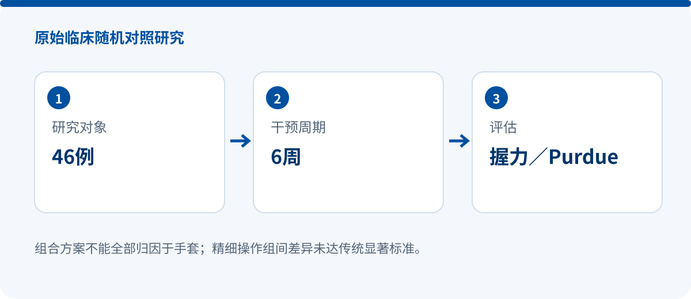

Robotic hand training with NMES: grip strength differed between groups; the pegboard between-group result did not
RANDOMIZED CONTROLLED STUDY
Combined Effect of Robotic Hand Training with Neuromuscular Electrical Stimulation on Hand Function and Quality of Life in Stroke Patients: A Randomized Controlled Trial
Alaa Elhamy Mansour Abd-Eltwab, Wael Shendy, Ebtesam Fahmy, et al.
The Egyptian Journal of Hospital Medicine, 103(1), 2607–2611, Article 155
DOI: 10.21608/ejhm.2026.504952 · Original record
SYREBO | 46 randomized | 42 completed

Research design
Participants were aged 50–65 years and were 6–24 months post-stroke. The study group received 20 minutes of robotic hand therapy with simultaneous NMES plus 30 minutes of conventional physical therapy; controls received 50 minutes of conventional physical therapy. Sessions occurred three times per week for six weeks.
A source excerpt reads “Syrebo® Hand Rehabilitation Robot, model SY…”, supporting the brand association but not the complete model. No model is inferred from current product catalogues. Total treatment time was 50 minutes in both groups, but only the study group received the two additional technologies.
Key findings
- Grip strength increased from 14.87±1.97 kg to 19.33±2.41 kg in the study group, a 30.0% gain, versus 13.4% in controls; the between-group p value was 0.002.
- Affected-hand Purdue Pegboard performance improved by 58.0% in the study group and 20.7% in controls. The study-group within-group p value was 0.001, but the between-group p value was 0.076.
- The accurate interpretation is therefore a between-group advantage for grip strength, but no conventionally significant between-group difference for the pegboard outcome despite within-group improvement.
Why it matters
The findings provide a positive signal for grip strength with a combined robotic-hand/NMES pathway and illustrate why within-group percentages must not be confused with comparative efficacy. For the pegboard outcome, within-group improvement and superiority to the control group are separate questions.
Evidence boundaries
- The study group received both robotic hand therapy and NMES, so the package effect cannot be attributed to the glove alone.
- Only 42 participants completed a six-week intervention, limiting precision and durability claims.
- Full text pending: exact model, complete quality-of-life findings and follow-up information remain unverified.
- The pegboard between-group p value was 0.076 and must not be described as significant.
Source and verification
Device names, sample accounting and numerical results follow the verified source scope stated above. No missing values are inferred.